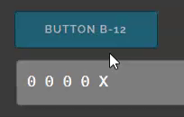

course itgid.info
Для применения темы "ночь" удалите комментарий с night.css.
Условие: везде где не сказано о способе задания типа данных - тип задается явно.
Создайте массив чисел ar_1 содержащих элементы 77, 88, 99 в таком же порядке как указано. Тип укажите самостоятельно. Выведите в консоль.
Создайте массив чисел ar_2 содержащих элементы 99, 100, 110 в таком же порядке как указано. Тип укажите самостоятельно. Выведите в .out-2 разделитель знак подчеркивания. В этой и далее задачах с разделителем приемлемым будет ответ и 99_100_110_ и 99_100_110.
Создайте массив ar_3, состоящий из строк 'Hello', 'Hi', 'Trust'. Тип данных укажите самостоятельно. Напишите функцию, f03, которая фильтрует массив ar3, возвращая новый массив, в котором находятся элементы длиной не менее 4 символов.
Создайте массив ar_4 состоящий из чисел. Заполните значениями самостоятельно. Напишите функцию, которая принимает массив как аргумент, и возвращает сумму элементов массива. Тип данных функции напишите самостоятельно.
Создайте функцию, которая выводит массив ar_5 в .out-5. Вывод осуществляйте циклом. Разделитель - дефис.
Напишите функцию, f06, которая создает массив состоящий только из чисел массива ar_06 и возвращает его.
Создайте readonly массив ar_07 содержащий всего два значения true, false. Тип задайте самостоятельно. Выведите массив в консоль.
Создайте функцию, которая читает число из input.i-8 и если число четное, то делает его push в массив ar_08, если не четное то unshift в массив. Массив создайте глобально по отношению к функции. Результат - выводите в .out-8, разделитель - подчеркивание.
Создайте функцию, которая принимает целое число n как аргумент и возвращает массив длиной n наполненный случайными числами от 0 до 10.
Создайте функцию, которая принимает массив ar_10 и возвращает два массива, первый из которых содержит только четные числа из исходного массива, а второй только нечетные числа.
Создайте функцию, которая выводит в .out-11 одномерный массив ar_11. Если в массиве встречается число 1, то на выводе оно заменяется на 'X' - латинскую X в верхнем регистре. Разделитель - пробел.
Создайте функцию, которая выводит в .out-12 одномерный массив ar_12. Если в массиве встречается число 1, то на выводе оно заменяется на 'X' - латинскую X в верхнем регистре. Разделитель - пробел. При нажатии кнопки значение 1 в массиве должно смещаться вправо, а старое положение заменять на 0. Положение единицы определяется счетчиком count.
Пример работы на gif:
Создайте функцию которая в массиве ar_13 заменяет числа 1 на 0, а 0 на 1. Выводит массив на страницу, разделитель между элементами - пробел, разделитель между строками перенос строки.
Создан кортеж k16. Напишите функцию, которая меняет в нем числа - добавляет к каждому числу по 10. Выведите в .out-16 сумму элементов кортежа.
Создан кортеж k17. Напишите функцию, которая выводит в .out-17 сумму элементов кортежа. Обратите внимание - количество элементов кортежа при проверке может меняться.
Создан кортеж k18 readonly тип boolean, содержащий элемент true, false. Напишите функцию f18, которая выводит в .out-18 значения кортежа через пробел. Кортеж объявлен глобально по отношению к функции.
Создан кортеж k19 readonly тип boolean, содержащий элемент true, false. Напишите функцию f19, которая выводит в .out-19 длину кортежа. Кортеж объявлен глобально по отношению к функции.
Создайте кортеж k20, содержащий массив чисел [2, 3]. Выведите в консоль.